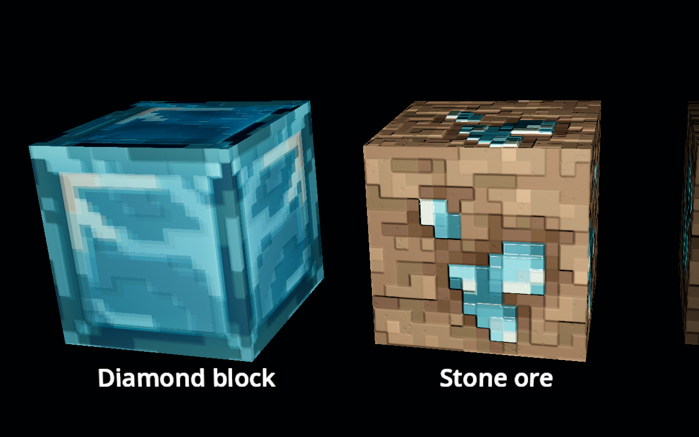
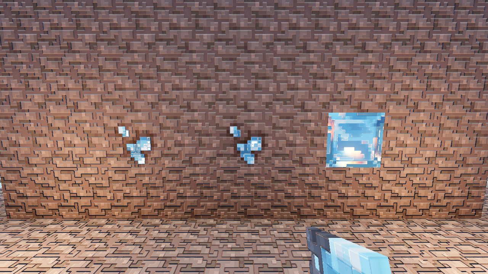
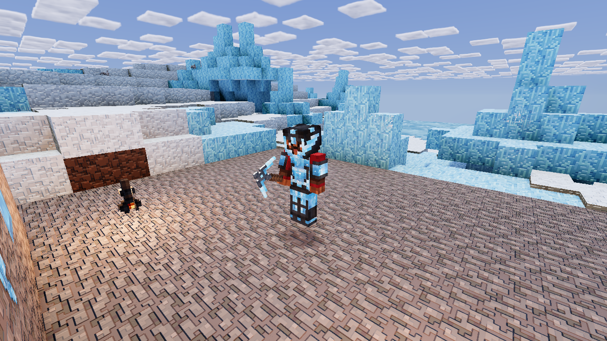

Refracted inner planes, coloured absorption and a restrained scattering response under the existing polished surface. These are apparent translucent interiors with solid backing, not windows onto scenery behind a block.
The same production shaders, camera and lamp in both views. Choose an angle and switch the interior off/on to see its movement beneath the surface.


